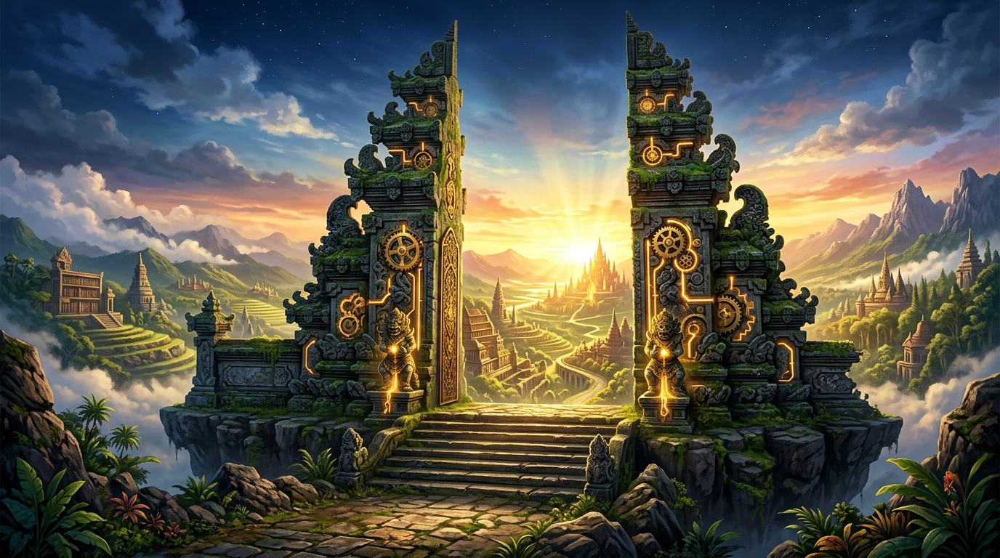
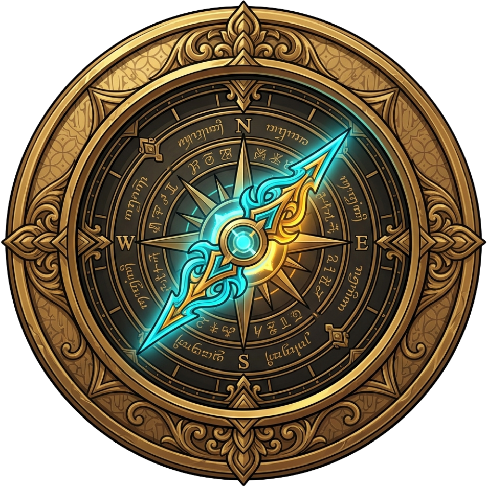
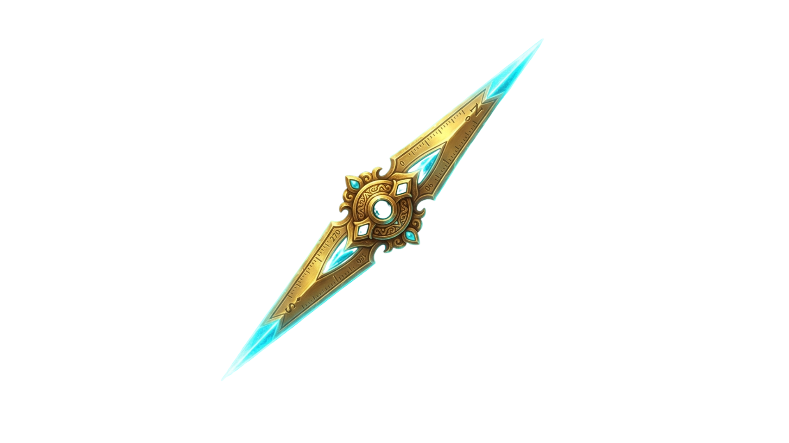
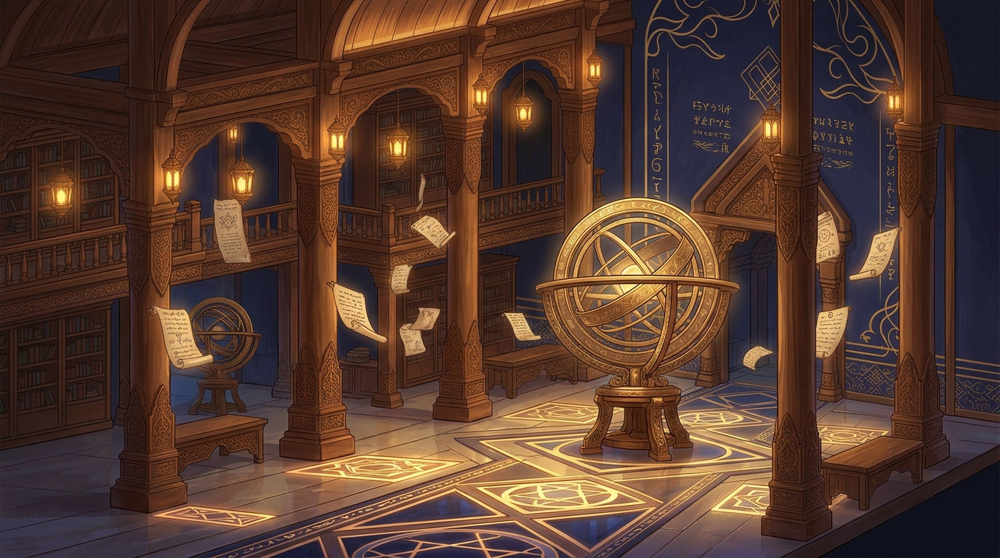
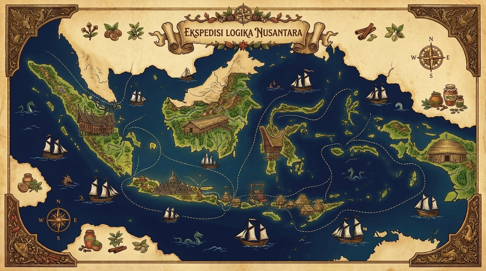

Tahap
Panduan



Melalui petualangan edukasi ini, peserta didik mampu menganalisis struktur teks prosedur (tujuan, bahan & alat, tahapan kerja kronologis, penutup), mengidentifikasi kaidah kebahasaan (kalimat imperatif, konjungsi temporal, kalimat larangan, & batasan terukur), serta menyimpulkan kausalitas logis aneka teks prosedur Nusantara secara kritis, mandiri, dan berbudaya.


Pos 1: Jamu Herbal Pos 2: Prasasti Struktur Pos 3: Dapur Rendang Pos 4: Kompos Hayati Pos 5: Sanggar Tenun Pos 6: Ujian LogikaDiberikan dengan kehormatan tertinggi atas penguasaan Capaian Pembelajaran Teks Prosedur Fase D kepada:
Telah berhasil menyelesaikan seluruh 6 ekspedisi berpikir kritis gim edukasi PROSEDURIA: Ekspedisi Logika Nusantara dengan prestasi istimewa, membuktikan penguasaan komprehensif pada Struktur Teks (Tujuan, Alat & Bahan, Langkah Kronologis, Penegasan Ulang), Kaidah Kebahasaan (Verba Imperatif, Konjungsi Temporal, Kalimat Larangan, Parameter Terukur), serta Kausalitas Prosedur Kebudayaan Nusantara.